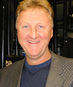

Larry Joe Bird (born December 7, 1956) is an American retired professional basketball player who played for the Boston Celtics of the National Basketball Association (NBA). Since retiring as a player, he has been a mainstay in the Indiana Pacers organization, currently serving as team president. Drafted into the NBA sixth overall by the Boston Celtics in 1978, Bird started at small forward and power forward for thirteen seasons, spearheading one of the NBA's most formidable frontcourts that included center Robert Parish and forward Kevin McHale. Bird was a 12-time NBA All-Star and was named the league's Most Valuable Player (MVP) three consecutive times (1984–1986). He played his entire professional career for Boston, winning three NBA championships and two NBA Finals MVP awards.
He was a member of the 1992 United States men's Olympic basketball team ("The Dream Team") that won the gold medal at the 1992 Summer Olympics. Bird was voted to the NBA's 50th Anniversary All-Time Team[1] in 1996 and inducted into the Naismith Memorial Basketball Hall of Fame[2] in 1998 (and was inducted again 2010 as a member of the "Dream Team").
He served as head coach of the Indiana Pacers from 1997 to 2000. In 2003, he assumed the role of president of basketball operations for the Pacers, holding the position until retiring in 2012.[3] After a year away from the position, he announced he would return to the Pacers as president of basketball operations in 2013.[4] In addition to being part of the 50–40–90 club, he is the only person in NBA history to be named Most Valuable Player, Coach of the Year, and Executive of the Year.
Bird immediately transformed the Celtics into a title contender, helping them improve their win total by 32 games from the year before he was drafted and finish first in the Eastern Conference.[19][20] With averages of 21.3 points, 10.4 rebounds, 4.5 assists, and 1.7 steals per game for the season, he was selected to the All-Star Team and named Rookie of the Year.[17] In the Conference Finals, Boston was eliminated by the Philadelphia 76ers.[20]
Before the 1980–81 season, the Celtics selected forward Kevin McHale in the draft and acquired center Robert Parish from the Golden State Warriors,[21][22] forming a Hall of Fame trio for years to come. Behind Bird's leadership and Boston's upgraded roster, the Celtics again advanced to the Conference Finals for a rematch with the 76ers.[23] Boston fell behind 3–1 to start the series but won the next three games to advance to the Finals against the Houston Rockets,[24] winning in six games and earning Bird his first championship.[23] He averaged 21.9 points, 14 rebounds, 6.1 assists, and 2.3 steals per game for the postseason and 15.3 points, 15.3 rebounds, and 7 assists per game for the Finals but lost out on the Finals MVP Award to teammate Cedric Maxwell.[17][25]
At the 1982 All-Star Game, Bird scored 19 points en route to winning the All-Star Game MVP Award.[26] At the conclusion of the season, he earned his first All-Defensive Team selection.[17] He eventually finished runner-up in Most Valuable Player Award voting to Moses Malone.[26] In the Conference Finals, the Celtics faced the 76ers for the third consecutive year, losing in seven games.[27] Boston's misfortunes continued into the next season, with Bird again finishing second in MVP voting to Malone and the team losing in the Conference Semifinals to the Milwaukee Bucks.[26][28]